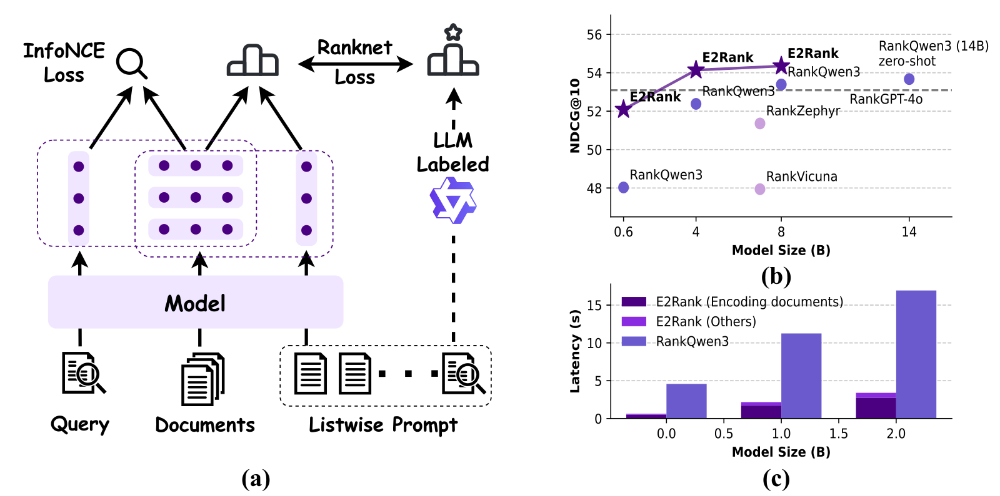
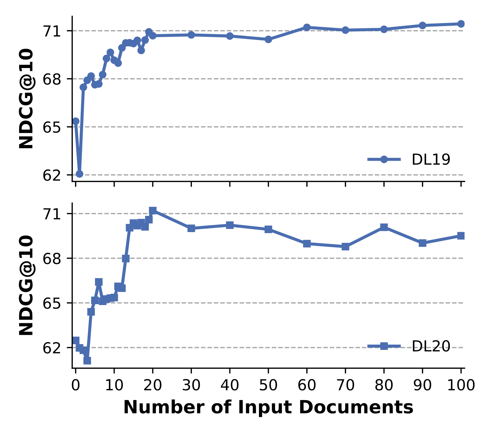
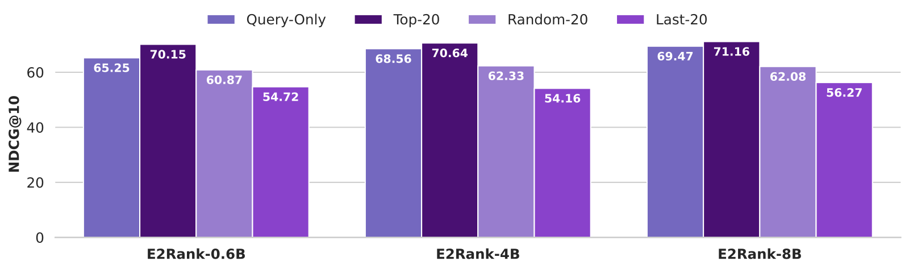

目录 · 10 节
1它到底在解决什么问题？2先看全景3机制一：把 listwise 提示词当成一个“更懂意图”的查询4机制二：两阶段训练，召回能力和重排能力一起保住5为什么快：不生成，一次前向就够6效果：平均分领先，但要看清来自哪里7前 20 篇的质量决定上限8我认为它的局限9一个检索团队可以怎么试10结论我的判断：做搜索或 RAG 检索链路、又嫌 LLM 重排太慢的团队值得读。它解决的问题是：LLM listwise 重排（把查询和几十篇候选一起塞进提示词，让模型输出排好序的编号）效果最好，但要逐个 token 生成排序结果，一个查询动辄几秒到十几秒；embedding 召回很快，但排序精度不够。核心思想一句话：把“查询 + 前 20 篇候选”这段 listwise 提示词整体编码成一个新的查询向量，再和预先算好的文档向量算余弦相似度来重排，不需要任何生成。几个关键数字：BEIR 8 个数据集上 E2Rank-8B 的平均 NDCG@10 为 54.35，和同底座的生成式重排 RankQwen3-8B（53.39）相当或略好；在 TREC-COVID 上每个查询的重排延迟从 16.93 秒降到 3.40 秒，约 5 倍；同一个模型做召回，MTEB 上的 embedding 能力没有下降。
它到底在解决什么问题？
先看一个示意场景。用户搜“小米 价格”，第一阶段召回拿回 100 篇文档，有讲手机的，也有讲粮食的。embedding 召回只看查询本身，“小米”这个词两种意思都沾边，所以排序里两类文档混在一起。如果先看一眼排在前面的文档，发现大多数在讲手机，就能推断用户多半问的是手机，再按这个理解重排。
这正是信息检索里的老方法：伪相关反馈（Pseudo Relevance Feedback，PRF），把初次检索排在前面的文档当作“大概率相关”，用它们来改写或扩充查询。LLM listwise 重排之所以强，作者认为也是同一个原因：模型同时看到查询和所有候选，能利用候选之间的关系。之前的研究已经发现，让模型逐个生成排序编号这一步并不是关键，起作用的是提示词里查询和候选的交互。
两种现成做法的取舍如下：
| 做法 | 怎么排序 | 优点 | 问题 |
|---|---|---|---|
| embedding 召回 | 查询向量和文档向量算余弦 | 快，文档向量可以预先算好 | 查询和文档、文档和文档之间没有细粒度交互 |
| LLM listwise 重排 | 提示词里放查询和候选，模型生成“[2] > [1] > [3]…” | 效果最好 | 长提示词预填充加逐 token 生成，延迟高 |
| E2Rank | 把查询和前 20 篇候选一起编码成新查询向量，再和文档向量算余弦 | 保留候选间的交互，又不需要生成 | 依赖前 20 篇的质量 |
先看全景

一次重排的流程：
| 步骤 | 做什么 | 计算量 |
|---|---|---|
| 1. 召回 | 用同一个模型的查询向量从库里取前 100 篇 | 一次编码加向量检索 |
| 2. 拼提示词 | 把查询和前 20 篇候选按召回顺序拼成一段 listwise 提示词 | 无 |
| 3. 编码提示词 | 整段过一次模型，取结尾 [EOS] 位置的隐藏状态作为新查询向量 | 一次前向计算 |
| 4. 重排 | 新查询向量和 100 篇文档的向量逐一算余弦，按分数排序 | 100 次向量点积 |
关键在于，文档向量不依赖查询，召回时算好就能在重排时复用，只有查询向量吸收了候选文档的信息。
机制一：把 listwise 提示词当成一个“更懂意图”的查询
普通 embedding 模型给查询编码时，输入是“指令 + 查询”；E2Rank 在重排时把输入换成“指令 + 前 k 篇候选 + 查询”，指令类似“给定一个查询和一些相关文档，对这些文档重排”，然后和普通 embedding 一样取最后一个位置的向量。
为什么这能帮助排序？在“小米 价格”的例子里，前 20 篇里如果 15 篇在讲手机，模型编码时会看到这些上下文，生成的查询向量就会偏向手机这个含义，讲粮食的文档余弦分数下降。和传统 PRF 不同，这里怎么利用这些文档不是人工规则（比如挑扩展词、把文档向量按比例加到查询上），而是靠训练学出来的。
作者专门比较过两种传统 PRF 做法：在没有经过 listwise 训练的模型上，直接把候选塞进提示词，或者把查询向量和文档向量做 Rocchio 式的加权融合（经典 PRF 公式：新查询 = 原查询 + 相关文档向量的加权平均）。
| 做法（0.6B 模型） | DL20 | BEIR 平均 | BRIGHT |
|---|---|---|---|
| E2Rank | 70.15 | 52.09 | 30.96 |
| 未做 listwise 训练，只用查询 | 66.29 | 49.93 | 22.69 |
| 加文本式 PRF（直接塞候选） | 56.57 | 46.52 | 29.62 |
| 加向量式 PRF（Rocchio 融合） | 63.96 | 49.20 | 21.85 |
这说明候选文档本身不会自动带来收益，没训练过的模型看到它们反而更差，在 DL20（TREC 2020 深度学习评测的段落检索集）上从 66.29 掉到 56.57。收益来自训练模型学会怎么读这些候选。
机制二：两阶段训练，召回能力和重排能力一起保住
第一阶段是标准的 embedding 训练：约 150 万条公开数据，用 InfoNCE 对比损失（让查询和正确文档靠近、和错误文档远离）训练查询和文档向量。
第二阶段继续训练，同时用两个损失：InfoNCE 保住召回能力，RankNet 学重排。训练数据约 8.7 万条，每条 1 个查询、1 个正例、15 个负例，由 Qwen3-32B 给这 16 篇文档排出完整顺序作为标签。RankNet 是成对损失：对每一对文档，如果标签说 A 比 B 相关，就惩罚模型给 A 的分数不高于 B 的情况。
这里有一个细节值得手算。余弦相似度之间的差通常很小，作者把分差除以温度 τ=0.1 再送进损失。设 A 应排在 B 前面，余弦分别是 0.70 和 0.50（示意）：τ=1 时损失为 log(1+e^(−0.2))≈0.60，和“完全分不出来”的 log2≈0.69 差不多；τ=0.1 时分差放大成 2，损失降到 log(1+e^(−2))≈0.13。也就是说，温度让余弦上的小差距在损失里变得明显，模型才有动力把它拉开。另外论文公式 (3) 里指数项的正负号写反了，按文中“排名数字越小越相关”的定义，原式会奖励顺序错误，应当按 RankNet 原意理解。
总损失是 InfoNCE 加上 λ 倍的 RankNet，λ 设为 2，作者把 λ 从 0.5 扫到 3，NDCG@10 变化不到 1 个点。
标签质量是个隐患。作者自己统计，在 MS MARCO 上 Qwen3-32B 把数据集标注的正例排在第一位的比例只略高于 50%，所以他们把这些标签当作带噪声的监督。有意思的是，老师模型零样本在 BEIR 上是 53.37，学生 E2Rank-8B 反而达到 54.35。
消融（0.6B）显示哪一部分最重要：
| 配置 | DL20 | BEIR 平均 | BRIGHT | MTEB v2 |
|---|---|---|---|---|
| 完整 E2Rank | 70.15 | 52.09 | 30.96 | 63.41 |
| 只做第一阶段 | 63.55 | 46.31 | 15.30 | 62.40 |
| 第二阶段去掉 RankNet | 66.50 | 49.24 | 22.40 | 63.31 |
| 第二阶段去掉 listwise 提示词 | 66.29 | 49.93 | 22.69 | 63.66 |
| 去掉第一阶段 | 69.32 | 51.33 | 30.66 | 60.61 |
去掉 RankNet 或去掉 listwise 提示词，BRIGHT 都从约 31 掉到约 22，说明重排能力主要来自“排序损失 + 候选上下文”的组合；去掉第一阶段对重排影响不大，但 MTEB 掉了近 3 个点，第一阶段主要在保召回。
为什么快：不生成，一次前向就够
对照的生成式基线 RankQwen3 用滑动窗口重排前 100 篇：每个窗口 20 篇、每次往上挪 10 篇，所以要跑 9 个窗口，每个窗口都要先读入 20 篇文档，再逐个生成排序编号。E2Rank 只把前 20 篇放进一次前向计算，剩下的只是向量点积，这就是速度差的来源。
| 每个查询的重排延迟（秒，单张 A100） | DL20 | TREC-COVID |
|---|---|---|
| RankQwen3-0.6B | 1.97 | 4.58 |
| RankQwen3-8B | 6.44 | 16.93 |
| FirstZephyr-7B（只生成一个 token） | 3.81 | 5.26 |
| Qwen3-0.6B 逐篇打分 | 0.28 | 0.40 |
| E2Rank-0.6B | 0.45 | 0.63 |
| E2Rank-8B | 2.55 | 3.40 |
这些延迟里 E2Rank 包含了编码 100 篇文档的时间。实际系统里文档向量在建索引时就算好了，从概览图 (c) 看，这部分占了 E2Rank 延迟的大头，所以线上真正的重排开销会更低。逐篇打分的同尺寸模型比 E2Rank 还快，但用同样数据和 RankNet 损失训练后，它在 BEIR 上只有 45.97，E2Rank-0.6B 是 52.09。
效果：平均分领先，但要看清来自哪里
| BEIR 8 个数据集平均 NDCG@10 | 0.6B | 4B | 8B |
|---|---|---|---|
| BM25 召回（不重排） | 43.43 | 43.43 | 43.43 |
| RankQwen3（生成式重排） | 48.03 | 52.38 | 53.39 |
| E2Rank（混合训练数据） | 52.09 | 54.14 | 54.35 |
0.6B 上 E2Rank 的 BEIR 平均领先 4.07 个点。作者对每个数据集做了逐查询的配对显著性检验，覆盖 BEIR 这 8 个加上 TREC DL 2019、2020 两个，共 10 个：0.6B 上 9 个显著更好，没有一个显著更差，这是最干净的结果。但到 4B 和 8B，平均领先主要来自 Touché2020 一个数据集：4B 上 Touché 一项就领先 10.50，8B 上领先 10.33。我把 Touché 去掉重算剩下 7 个数据集的平均差，4B 约 +0.51，8B 约 −0.38（我的推算），也就是说 8B 上不算 Touché 时 E2Rank 略差于生成式重排。而且 Touché 上 BM25 本身有 44.22，RankQwen3-8B 重排后只有 31.73，E2Rank-8B 是 42.06，所谓“领先”更多是比生成式重排少掉分，而不是排得更好。
推理密集的 BRIGHT 上，E2Rank-8B 平均 33.4，高于同尺寸 RankQwen3 的 32.0 和大多数用强化学习训练的推理型重排模型，只低于 ReasonRank（7B）的 35.7。作为召回模型，E2Rank-8B 在 MTEB 56 个数据集上的平均分是 65.03，和只做第一阶段的 64.26 相比还略有提升。
前 20 篇的质量决定上限


这两张图说明，E2Rank 的收益来自“前面的候选大多是相关的”这个前提，并不是提示词越长越好。作者还做了一个逐步污染实验：把前 20 篇里的相关文档按比例换成不相关文档，DL20 从 70.15 一路降到 51.55，全部换掉时只比 BM25 的 47.96 高一点，远低于只用查询的 65.25。
我认为它的局限
第一，它在第一阶段召回失败时会放大错误。对召回本来就差的查询（前 20 篇里相关文档很少），反馈信号是误导性的，结果可能比不用 listwise 还差。作者在局限部分也承认，相关证据极少时可能低于第一阶段本身。线上要考虑给这类查询退回只用查询的打分。
第二，大模型上的优势不稳。4B、8B 的平均领先很大一部分来自 Touché 一个数据集，若干 BEIR 数据集上还显著变差，TREC DL 上大多不显著。如果你的场景接近 MS MARCO 这类网页问答，8B 规模下不一定比生成式重排好，主要好处是快。
第三，标签和对比都有噪声。训练标签来自一个和数据集正例一致率只有约五成的 LLM，没有人工标注校验；生成式基线 RankQwen3 用的是 4 万条 GPT-4 标注数据，而 E2Rank 的混合数据是约 8.7 万条，两者数据量和来源并不相同。只有用 MS MARCO 训练的那组是同数据对比，那组 8B 的平均领先只有 0.47。
一个检索团队可以怎么试
- 先确认召回质量。用自己的评测集看前 20 篇里平均有几篇相关，若很低，E2Rank 的前提不成立，先改召回。
- 用现有的 embedding 模型做第二阶段训练。论文在双向注意力的 GTE-Qwen2-1.5B 上也验证过，BEIR 平均从 51.56 升到 53.57，MTEB 基本不变，不一定要换底座。
- 把反馈窗口设在 20 篇左右，按召回顺序放入；同时保留只用查询的打分作为兜底，对召回置信度低的查询切回去。
- 比较延迟时去掉文档编码，只算提示词的一次前向，和现有重排模型在同一 GPU 上对比。
结论
一句话：listwise 重排的效果主要来自“让模型同时看到候选”，而不是让它生成排序，把这一点放进 embedding 模型里，就能用一次前向和余弦相似度换掉生成。
| 维度 | 评价 |
|---|---|
| 问题重要性 | 高。重排延迟是 LLM 进入搜索和 RAG 链路的主要障碍 |
| 方法创新性 | 中偏高。PRF 和 RankNet 都是老方法，新在把 listwise 上下文学成一个查询向量，文档向量保持可复用 |
| 实验证据 | 中。0.6B 结果扎实，大模型上的优势集中在个别数据集，标签噪声较大 |
| 工程成本 | 低。一个模型兼做召回和重排，不需要生成，支持批量推理 |
| 是否值得尝试 | 值得。尤其是延迟敏感、召回质量已经不错的场景 |
讨论
欢迎补充实验细节、复现经验或不同看法。需 GitHub 登录。
正在加载讨论…